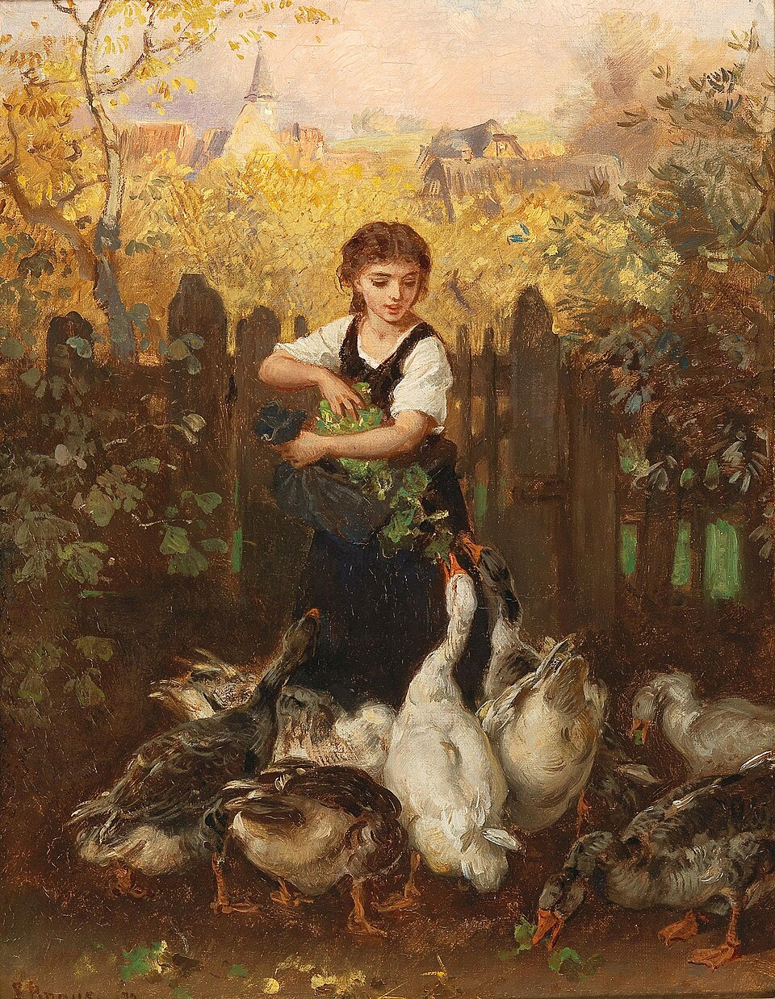
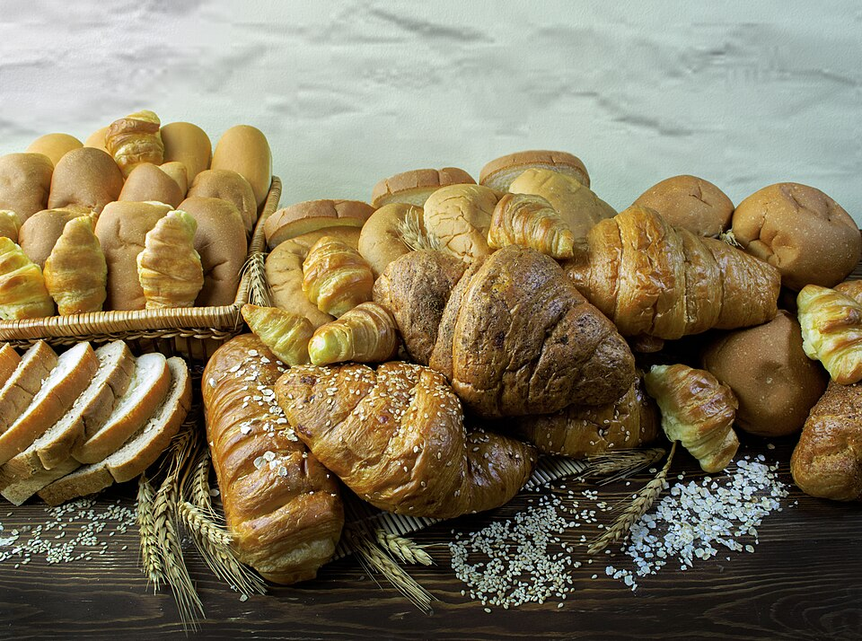
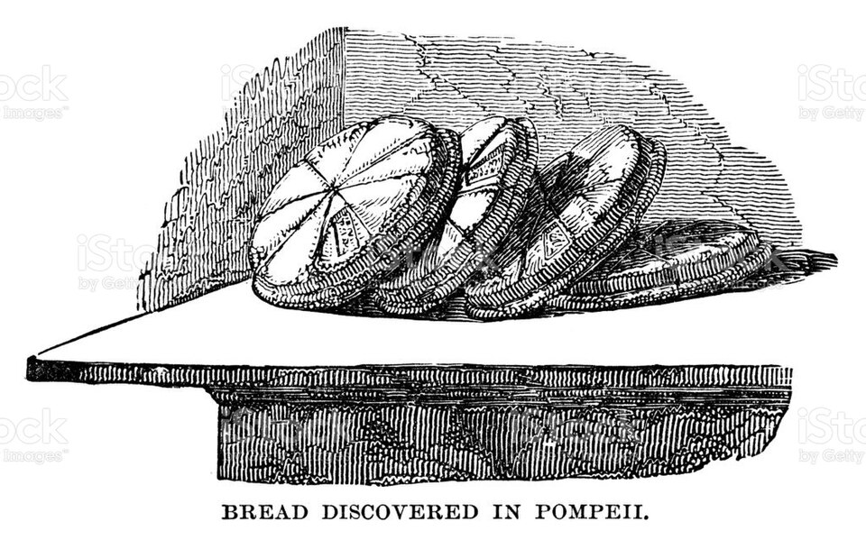
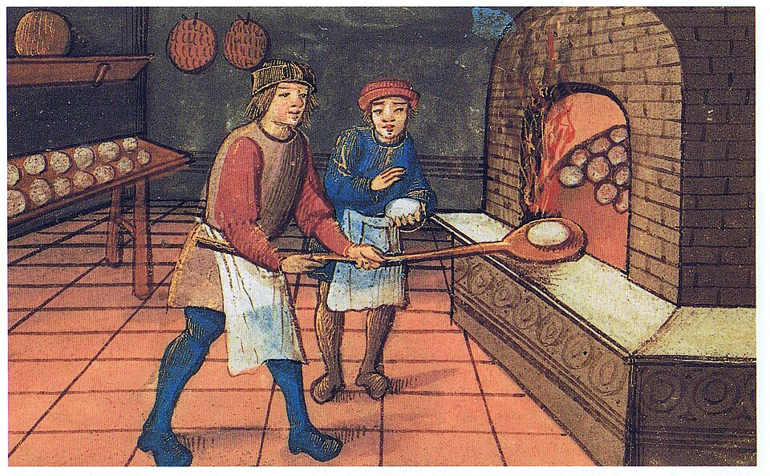
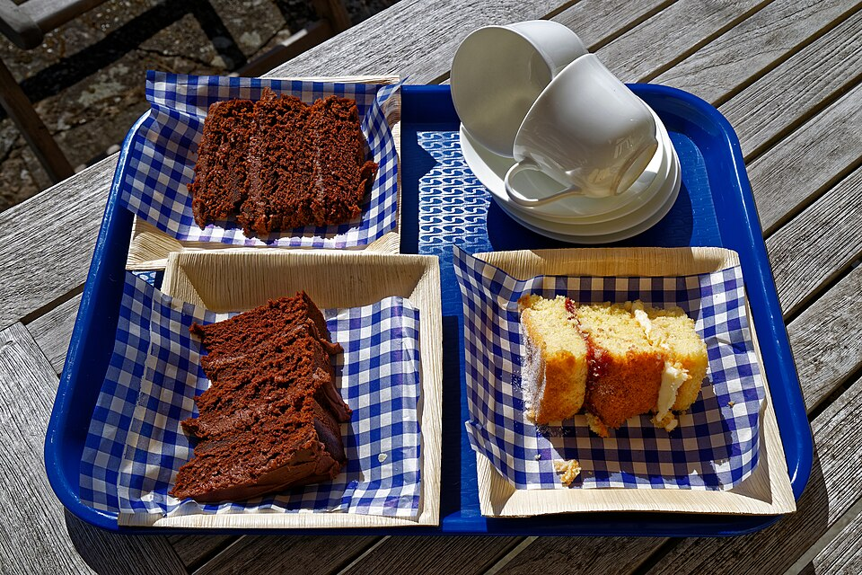

A história do bolo
O bolo tem raízes antigas: há cerca de 4 mil anos, no Egito, já se preparavam pães e massas fermentadas, algumas adoçadas com mel e frutas. Essas receitas eram mais densas e simples que os bolos atuais, mas mostram como a mistura de farinha e ingredientes doces faz parte da história da alimentação há muito tempo.
Na Europa, a partir do século XVII, receitas começaram a se aproximar dos bolos que conhecemos, com o uso de açúcar refinado, formas e fornos mais controlados. No século XIX, a popularização de ingredientes que ajudavam a massa a crescer tornou os bolos mais leves e acessíveis, ampliando a variedade de receitas.

Bolos no Egito Antigo
Por volta de 2000 a.C., no Egito Antigo, já eram preparados pães e massas fermentadas, algumas adoçadas com mel e frutas. Como o açúcar ainda não era usado como hoje, o mel era um dos principais ingredientes para adoçar. Essas preparações eram mais densas que os bolos atuais e faziam parte de rituais e da alimentação cotidiana.

Grécia e Roma
Entre os séculos V e IV a.C., os gregos preparavam massas doces com mel, queijo e frutas. Mais tarde, por volta do século II a.C., os romanos registraram receitas como libum e placenta, feitas com farinha e queijo. Esses preparos eram diferentes dos bolos modernos, mas mostram como as receitas e técnicas de panificação se desenvolveram e circularam pelo Mediterrâneo.

Bolos na Idade Média
Durante a Idade Média, aproximadamente do século V ao XV, pães enriquecidos e massas doces eram preparados na Europa, muitas vezes com mel, frutas secas e especiarias. O açúcar chegou gradualmente à Europa medieval e permaneceu caro por muito tempo, por isso era reservado principalmente às mesas mais ricas. Os fornos comunitários e as receitas locais influenciavam o formato e o sabor dos bolos.

Bolos na atualidade
A partir do século XIX, a fabricação de fermentos químicos ajudou a deixar os bolos mais leves e facilitou o preparo em casa. Nos séculos XX e XXI, eletrodomésticos, novos ingredientes e técnicas de confeitaria ampliaram ainda mais as possibilidades. Hoje há bolos de muitos sabores e formatos, feitos para diferentes gostos e ocasiões.

Fontes históricas
Referências consultadas para complementar as informações sobre a história dos alimentos e dos bolos:
- The Metropolitan Museum of Art — “Food and Drink in Ancient Egypt”
- Encyclopaedia Britannica — “Cake”
- Davidson, Alan. The Oxford Companion to Food. 3ª edição. Oxford University Press, 2014.
- Tannahill, Reay. Food in History. Edição revisada. Crown Publishers, 1988.
Créditos das imagens:
- Cake at Teatime, pintura de Ludwig Knaus — domínio público.
- Pães egípcios, foto de Dina Said — CC BY-SA 4.0.
- Bread discovered in Pompeii, gravura de William Clark (1832), digitalização de benoitb — domínio público.
- Medieval baker, autoria não informada na página — domínio público.
- Chocolate cake and Victoria sponge, foto de Acabashi — CC BY-SA 4.0.